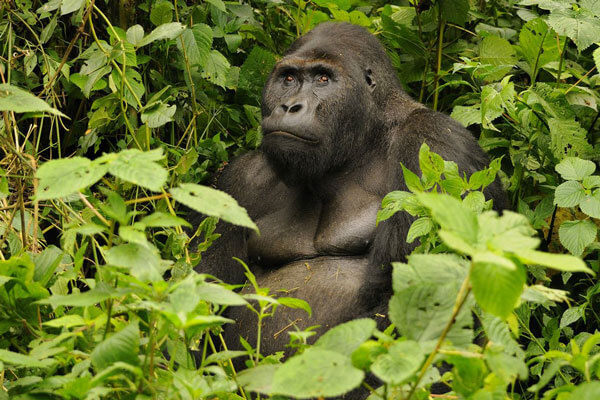

멸종 위기에 빠진
동물들을 지켜주세요.
Footprint
멸종위기에 빠진 동물들의 정보를 수집하고
정보를 가공하여 많은 사람들이 쉽게 접할 수 있도록
도와줍니다.

RED LIST www.iucnredlist.org
IUCN 레드리스트
1964 년에 설립 된 국제 자연 보존 연맹 (The International Union for
Conservation of Nature 's Red List of Threatened Species) 은 동물, 균류 및
식물 종의 세계 보존 상태에 대한 세계에서 가장 포괄적인 정보 출처로 발전했습니다.
세계 생물 다양성의 건강 상태를 나타내는 중요한 지표입니다. 종과 그 상태의
목록보다 훨씬 더 많은 생물 다양성 보전 및 정책 변화를 위한 조치를 알리고 촉매하는
강력한 도구이며, 생존에 필요한 천연 자원을 보호하는 데 중요합니다.
필요한 보존 결정을 알리는 데 도움이되는 범위, 인구 규모, 서식지 및 생태, 사용 및 /
또는 무역, 위협 및 보존 조치에 대한 정보를 제공합니다.